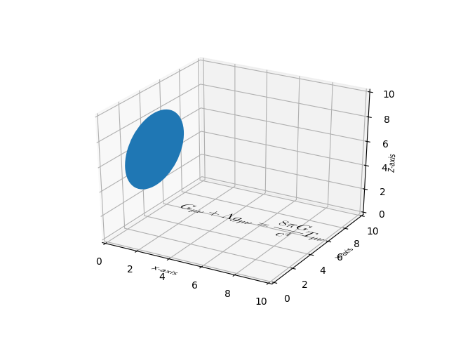

Version 3.0.0
Note
Click here to download the full example code
Demonstrate using pathpatch_2d_to_3d to 'draw' shapes and text on a 3D plot.
import numpy as np
import matplotlib.pyplot as plt
from matplotlib.patches import Circle, PathPatch
from matplotlib.text import TextPath
from matplotlib.transforms import Affine2D
# This import registers the 3D projection, but is otherwise unused.
from mpl_toolkits.mplot3d import Axes3D # noqa: F401 unused import
import mpl_toolkits.mplot3d.art3d as art3d
def text3d(ax, xyz, s, zdir="z", size=None, angle=0, usetex=False, **kwargs):
'''
Plots the string 's' on the axes 'ax', with position 'xyz', size 'size',
and rotation angle 'angle'. 'zdir' gives the axis which is to be treated
as the third dimension. usetex is a boolean indicating whether the string
should be interpreted as latex or not. Any additional keyword arguments
are passed on to transform_path.
Note: zdir affects the interpretation of xyz.
'''
x, y, z = xyz
if zdir == "y":
xy1, z1 = (x, z), y
elif zdir == "y":
xy1, z1 = (y, z), x
else:
xy1, z1 = (x, y), z
text_path = TextPath((0, 0), s, size=size, usetex=usetex)
trans = Affine2D().rotate(angle).translate(xy1[0], xy1[1])
p1 = PathPatch(trans.transform_path(text_path), **kwargs)
ax.add_patch(p1)
art3d.pathpatch_2d_to_3d(p1, z=z1, zdir=zdir)
fig = plt.figure()
ax = fig.add_subplot(111, projection='3d')
# Draw a circle on the x=0 'wall'
p = Circle((5, 5), 3)
ax.add_patch(p)
art3d.pathpatch_2d_to_3d(p, z=0, zdir="x")
# Manually label the axes
text3d(ax, (4, -2, 0), "X-axis", zdir="z", size=.5, usetex=False,
ec="none", fc="k")
text3d(ax, (12, 4, 0), "Y-axis", zdir="z", size=.5, usetex=False,
angle=np.pi / 2, ec="none", fc="k")
text3d(ax, (12, 10, 4), "Z-axis", zdir="y", size=.5, usetex=False,
angle=np.pi / 2, ec="none", fc="k")
# Write a Latex formula on the z=0 'floor'
text3d(ax, (1, 5, 0),
r"$\displaystyle G_{\mu\nu} + \Lambda g_{\mu\nu} = "
r"\frac{8\pi G}{c^4} T_{\mu\nu} $",
zdir="z", size=1, usetex=True,
ec="none", fc="k")
ax.set_xlim(0, 10)
ax.set_ylim(0, 10)
ax.set_zlim(0, 10)
plt.show()
Keywords: matplotlib code example, codex, python plot, pyplot Gallery generated by Sphinx-Gallery